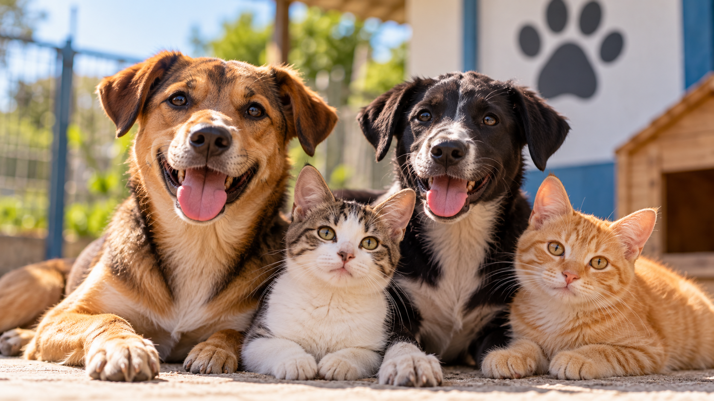

Sobre a Patas Acolhidas

A Patas Acolhidas é uma ONG dedicada ao cuidado de animais abandonados, oferecendo acolhimento e buscando novos lares por meio da adoção responsável.
Contato
E-mail: contato@patasacolhidas.org
Telefone: (61) 99999-9999